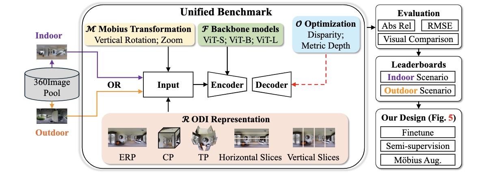
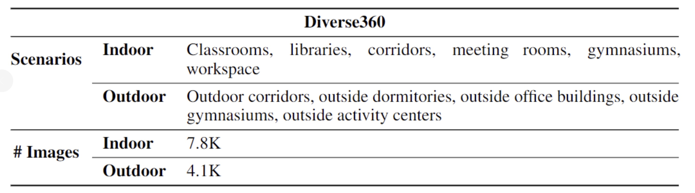
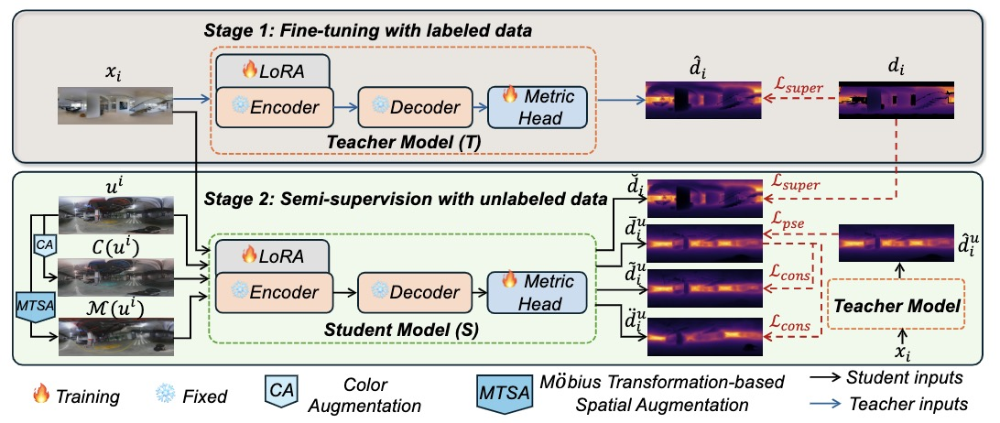
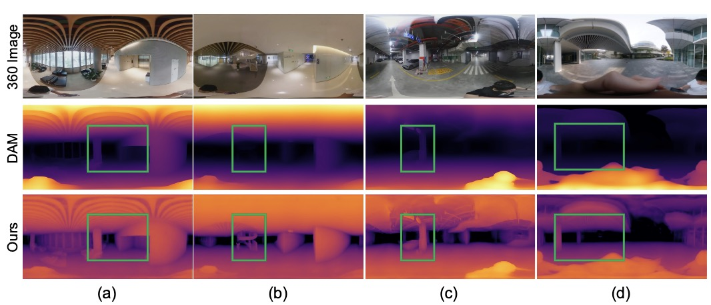
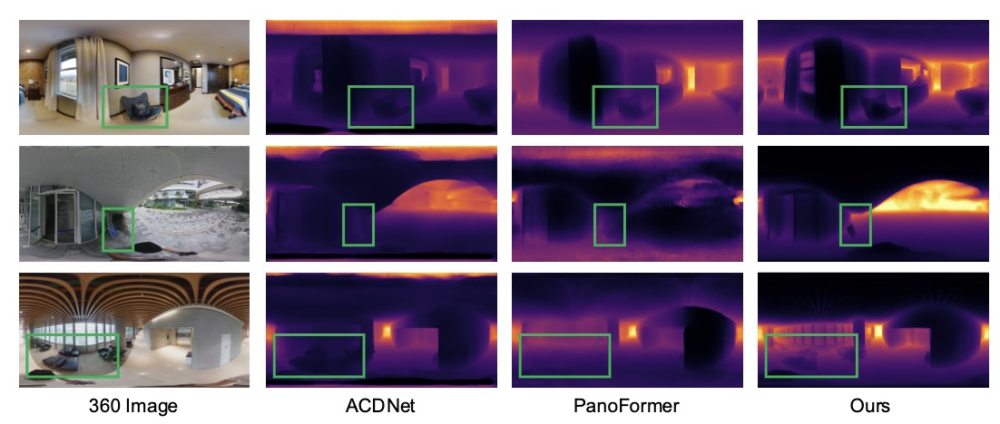
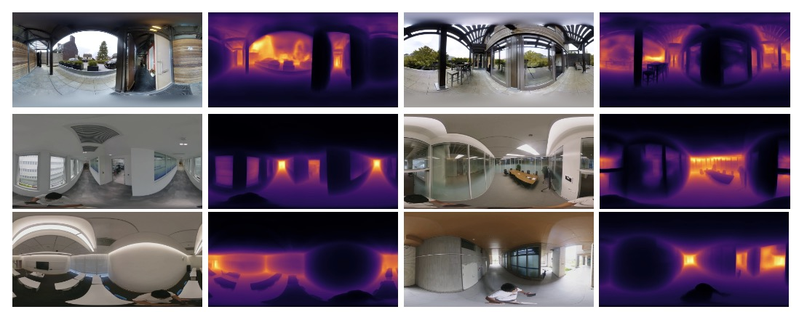

Any360D: Towards 360 Depth Anything with Unlabeled 360 Data and Mobius Spatial Augmentation
Abstract
Recently, Depth Anything Model (DAM) -- a type of depth foundation model -- reveals impressive zero-shot capability for diverse perspective images. Despite its success, it remains an open question regarding DAM's performance on 360 images that enjoy large field-of-view (360°x180°) but suffer from spherical distortions. To this end, we establish, to our knowledge, the \textbf{\textit{first}} benchmark that aims to \textbf{\textit{1)}} evaluate the performance of DAM on 360 images and \textbf{\textit{2)}} develop a powerful 360 DAM for the benefit of the community. For this, we conduct a large suite of experiments that consider the key properties of 360 images, \eg, different 360 representations, various spatial transformations, and diverse indoor and outdoor scenes. This way, our benchmark unveils some key findings, \eg, DAM is less effective for diverse 360 scenes and sensitive to spatial transformations. To address these challenges, we first collect a large-scale unlabeled dataset including diverse indoor and outdoor scenes. We then propose a semi-supervised learning (SSL) framework to learn a 360 DAM, dubbed Any360D. Under the umbrella of SSL, Any360D first learns a teacher model by fine-tuning DAM via metric depth supervision. Then, we train the student model by uncovering the potential of large-scale unlabeled data with pseudo labels from the teacher model. Mobius transformation-based spatial augmentation (MTSA) is proposed to impose consistency regularization between the unlabeled data and spatially transformed ones. This subtly improves the student model's robustness to diverse spatial transformations even under severe distortions. Extensive experiments demonstrate that Any360D outperforms DAM and many prior data-specific models, e.g., PanoFormer across diverse scenes, showing impressive zero-shot capacity for being a 360 depth foundation model.
Benchmark for DAM
We evaluate the performance of DAM from five perspectives: representations, transformations, backbones, indoor/outdoor scenes, and optimization space.
Overview of Our Dataset

Our Any360D Framework
Our Any360D contains two stages during the training phase: 1) fine-tuning teacher model with labeled 360 images; 2) training the student model by introducing the Mobius transform-based spatial augmentation under semi-supervision manner with unlabeled data.
Experiments Results
  